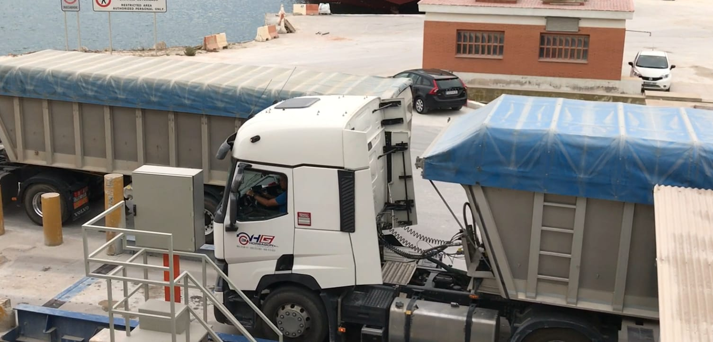
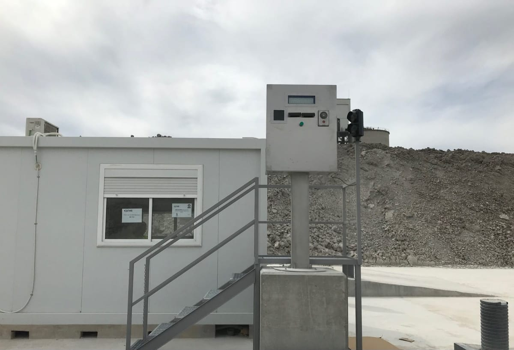
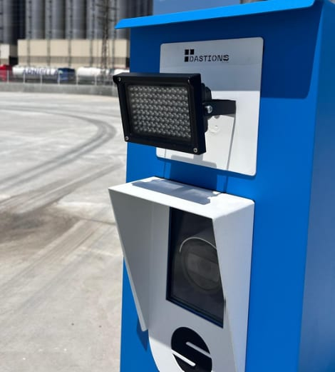
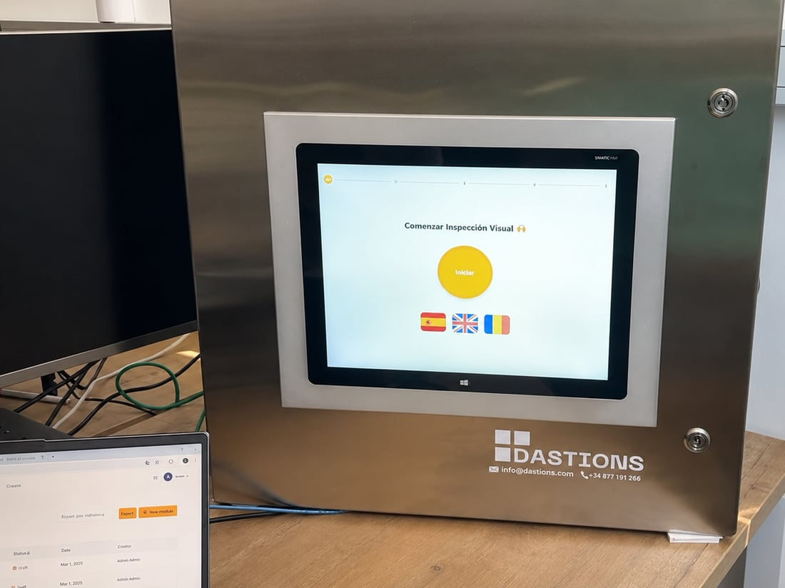
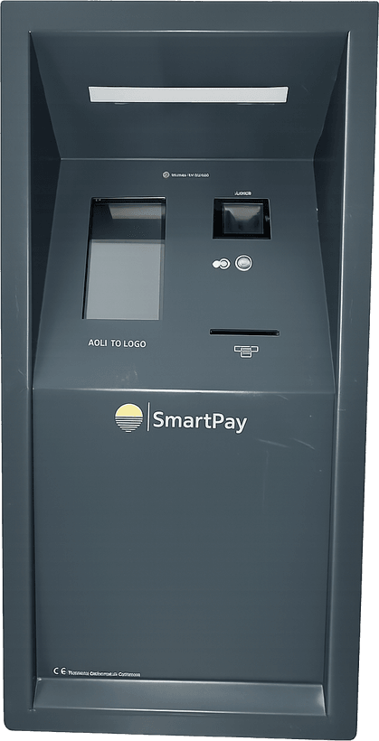
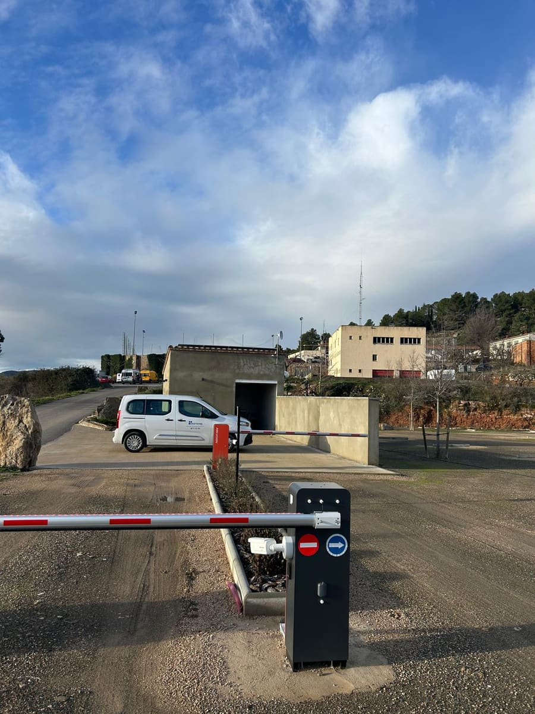

Tótems, lectura de matrículas, control de accesos y cobro por móvil, integrados con tu báscula y tu software.
Cada uno cubre una necesidad concreta. Todos se integran con tu báscula y con nuestro software.
Presentes en cualquier modelo de tótem.
Identificación por QR.
Identificación por RFID.
Acción configurable.
Habla con el operario.

Su especialidad: la impresión. El conductor se lleva el documento de pesaje en papel, en el momento.
Sin tótem en la báscula. Una cámara OCR identifica el camión, gestiona la pesada y coordina las señales de campo, como barreras y semáforos. Todo digital.


Su especialidad: la pantalla. Acompaña al conductor paso a paso durante toda la operación.

Su especialidad: el cobro desde el móvil. El conductor paga el pesaje o el acceso escaneando un QR con su teléfono, sin efectivo ni tarjeta y sin manipular dinero.

Una cámara reconoce la matrícula del camión al llegar (OCR/ANPR) y el sistema ordena el tráfico con barreras, semáforos y lazos inductivos. Solo deja pasar a quien está autorizado, sin tarjetas ni códigos.
¿Montas básculas? Estos productos no los vendes tú, pero puedes ofrecerlos a tus clientes a través de nosotros. Tú montas la báscula; el tótem y el software los ponemos nosotros.
Cuéntanos tu operativa y te proponemos el equipo de autoservicio que encaja.
Solicitar presupuesto →